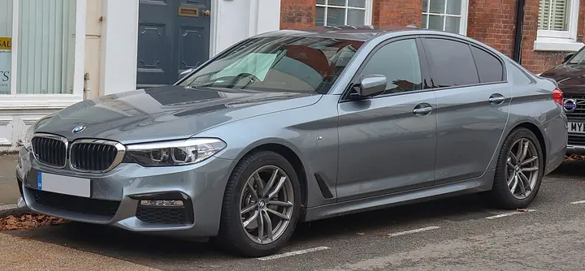
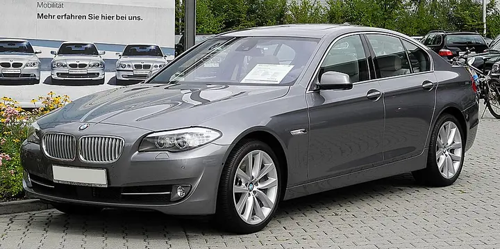
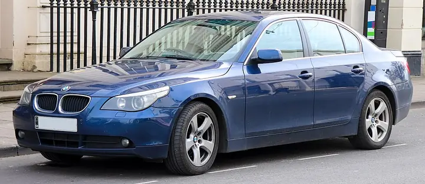
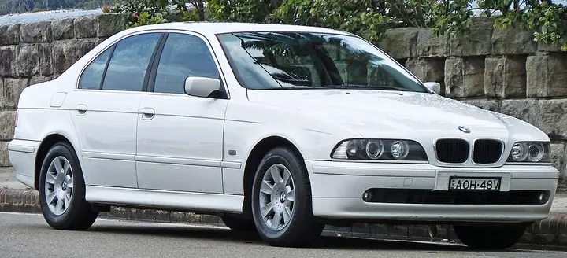
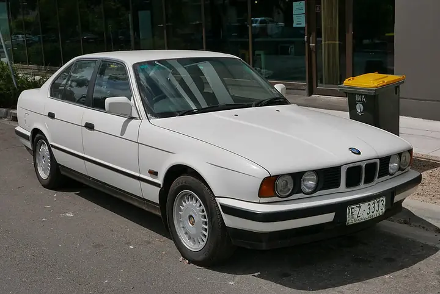
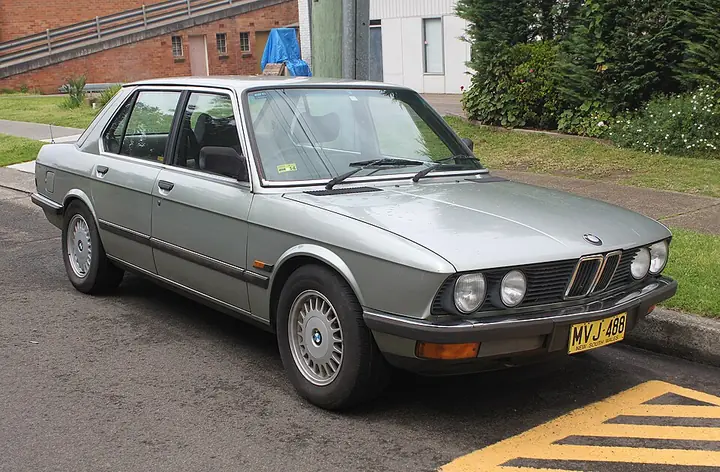
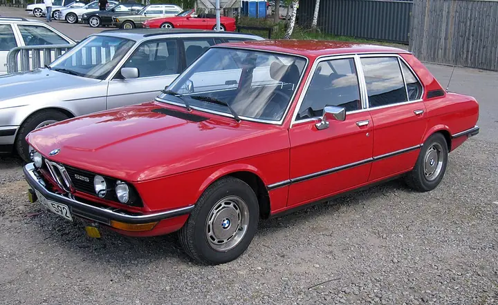

BMW 5 Series
Eighth generation (G60/G61/G68; 2024) · 2023–present
Abstract
This generation of the BMW 5 Series is an executive car (E), built July 2023 – present (sedan) in Germany: Dingolfing (Dingolfing Plant), China: Dadong, Shenyang (BBA, LWB). Body styles: 4-door saloon (G60), 5-door estate (G61). Layout: Front-engine, rear-wheel-drive. Designed by Anders Thøgersen. This generation has its own article: BMW 5 Series (G60).


1Specifications
| Production | July 2023 – present (sedan)March 2024 – present (estate)June 2024 – present (M5) |
|---|---|
| Model years | 2024–present |
| Assembly | Germany: Dingolfing (Dingolfing Plant)China: Dadong, Shenyang (BBA, LWB) |
| Designer | Anders Thøgersen |
| Class | Executive car (E) |
| Body style | 4-door saloon (G60)5-door estate (G61) |
| Layout | Front-engine, rear-wheel-driveFront-engine, all-wheel-drive (xDrive)Rear-motor, rear-wheel-drive (i5 eDrive40)Dual-motors, all-wheel-drive (i5 xDrive40, M60) |
| Platform | Cluster Architecture (CLAR) |
| Engine | Petrol:2.0 L B48 I4 turbo3.0 L B58 turbo I6Petrol plug-in hybrid:2.0 L B48 I4 turbo3.0 L B58 I6 turbo4.4 L S68 V8 twin-turbo (M5)Diesel:2.0 L B47 I4 turbo3.0 L B57 turbo I6 |
| Transmission | 8-speed ZF 8HP automaticSingle-speed (i5) |
| Battery | 48 V lithium-ion19.4 kWh lithium-ion (530e / 550e xDrive / M560e xDrive)84.3 kWh lithium-ion (i5) |
| Wheelbase | 2995 mm3105 mm (LWB) |
| Length | 5060 mm5175 mm (LWB) |
| Width | 1900 mm |
| Height | 1515 mm |
| Weight | 1800–2510 kg |
| Also called | BMW i5 (electric version) |
| Related | BMW M5 (G90)BMW 7 Series (G70)BMW iXBMW X3 (G45)BMW 3 Series (G50) |
| Predecessor | BMW 5 Series (G30)BMW 6 Series (G32) |
2Versions
- BMW i5
- BMW M5 (G90/99)
3Previous generations

.jpg){kind=link}

_%E2%80%93_Frontansicht_(2),_17._Juli_2011,_Mettmann.jpg){kind=link}



_Executive_sedan_(2010-10-02)_01.jpg){kind=link}

_sedan_(2015-11-13)_01.jpg){kind=link}

_sedan_(21539857803).jpg){kind=link}

.jpg){kind=link}
4Generation by generation
Length +10% from the first to the last
E12 19724,620 mm
E28 19814,620 mm
E34 19874,720 mm
E39 19954,775 mm
E60 20034,843 mm
F10 20094,899 mm
G30 20164,936 mm
G60 20235,060 mm
Weight +46% from the first to the last
E12 19721,235 kg
E34 19871,440 kg
E39 19951,500 kg
E60 20031,545 kg
F10 20091,700 kg
G30 20161,605 kg
G60 20231,800 kg